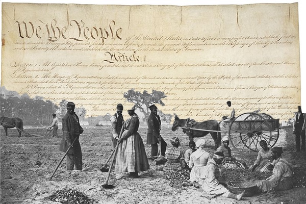

The Constitution does not contain the word "slave".
Even though slavery was such a prominent element of the country, the founders avoided it to prevent controversy.

This decision, "the silence", was the first time American politicians would circumvent the addressal of slavery.
Despite this, the institution received important protections in the Constitution, reached via compromise:
- The three-fifths clause counted 3/5 of the slave population in computing congressional representation, giving the South extra representation in the House and extra votes in the Electoral College
- The document prevented Congress from outlawing the international slave trade for twenty years
- There was a fugitive slave clause, which required runaway slaves to be returned to their owners
All of this was included without explicitly mentioning slavery.
This combination of silence and compromise would create a non-confrontational model that promoted suppressing slavery.
To understand this, it is important to look into the framers' discourse, and understand their motivations.